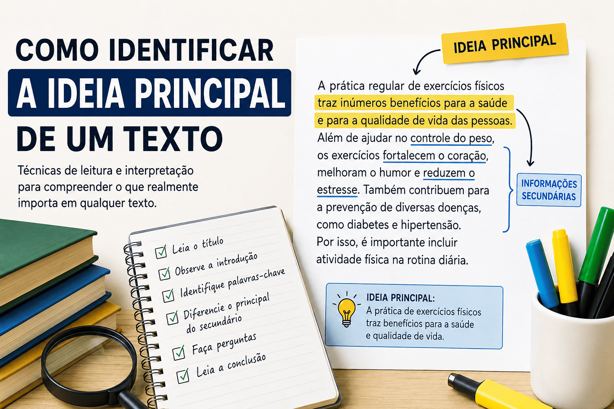

Como Identificar a Ideia Principal de um Texto: técnicas para o ENEM, vestibulares e concursos
A capacidade de identificar a ideia principal de um texto é a habilidade mais determinante para o sucesso em provas de linguagens e interpretação textual. Nas provas do ENEM, do PAES UEMA e em concursos públicos, a maioria esmagadora dos erros não decorre do desconhecimento vocabular, mas da incapacidade de hierarquizar as informações: o candidato se perde em detalhes ilustrativos, confunde um exemplo secundário com a tese e cai no perigoso distrator de redução.
Nenhum texto de circulação social distribui a importância das frases de maneira uniforme. Os autores constroem suas mensagens em torno de um núcleo semântico indispensável, utilizando argumentos de suporte, dados estatísticos e citações apenas para dar sustentação ao eixo central. Saber encontrar a ideia principal é a arte de separar o que é essencial daquilo que é mero acessório de persuasão.
Neste guia completo, você dominará a teoria da macroestrutura textual (Teun van Dijk) e do tópico frasal (Othon Garcia), conhecerá os 4 níveis de manifestação da ideia central em diferentes gêneros, aprenderá a blindar sua leitura contra os distratores de redução e testará sua precisão em nosso quiz avançado com 10 questões comentadas.

1. A Fronteira do Sentido: Tema vs. Ideia Principal (Tese)
Na linguística textual e na semântica discursiva, a distinção entre o assunto de que se fala e o posicionamento efetivo do autor constitui a base para evitar erros de interpretação:
Tema (O assunto geral / O recorte amplo)
É o objeto temático sobre o qual o texto se debruça; responde à pergunta "sobre o que o autor está falando?". Trata-se de uma delimitação conceitual ainda aberta, que não expressa, por si só, um julgamento fechado, uma defesa ou uma constatação categórica. Se um texto trata de: "A presença de smartphones nas salas de aula brasileiras", temos apenas o tema demarcado.
Ideia Principal / Tese (A mensagem central / O posicionamento)
É aquilo que o autor afirma, defende ou conclui especificamente sobre o tema; responde à pergunta "qual é o veredito ou mensagem que o autor quer gravar na mente do leitor?". Ela unifica todos os parágrafos. No caso do tema citado: "O uso irrestrito de smartphones em sala de aula prejudica a aprendizagem profunda e exige regulamentação pedagógica imediata" — esta é a ideia principal.
A Regra de Ouro do Tópico Frasal: O Teste do Apagamento!
Para checar se uma frase expressa a ideia principal, faça o teste da supressão formulado por Teun van Dijk:
Se você apagar um exemplo, um número ou uma citação, o texto perde detalhes, mas continua em pé.
Se você apagar a oração nuclear e o texto desmoronar sem fazer sentido, você encontrou a ideia principal!
2. Os 4 Níveis de Reconhecimento da Ideia Central
Em certames concorridos, a mensagem nuclear manifesta-se de maneiras distintas conforme o gênero textual examinado:
Manifestações da ideia principal em provas:
- 1. Nível Argumentativo (Tese e Posicionamento Crítico): Típico de artigos de opinião, editoriais e redações. A ideia principal reside na tomada de posição ideológica do autor diante de um problema social, amparada por conectivos de conclusão e operadores argumentativos de reforço.
- 2. Nível Informativo (Fato Nuclear e Lead Noticioso): Característico de notícias e reportagens. A ideia principal concentra-se nas respostas imediatas do primeiro parágrafo (quem, o quê, quando, onde e por quê), separando a ocorrência central dos relatos secundários de testemunhas.
- 3. Nível Científico-Acadêmico (Hipótese e Descoberta): Presente em textos de divulgação científica. A ideia principal articula a relação de causa e efeito comprovada pela pesquisa, descartando metodologias instrumentais e histórico da literatura como dados secundários.
- 4. Nível Ficcional e Simbólico (Conflito e Moral Subjacente): Comum em contos, fábulas e crônicas do ENEM e da UEMA. A ideia principal raramente está explícita; ela emerge do desenlace do conflito dramático ou da crítica social costurada nas atitudes das personagens.
3. Gatilhos Estruturais do Texto (Onde ela se esconde?)
A ideia central deixa marcas inequívocas na organização sintática e nos parágrafos do texto. Atente a estes pontos estratégicos:
| Elemento Estrutural | Onde Localizar no Texto | Como Funciona como Pista | Exemplo Comentado |
|---|---|---|---|
| Tópico Frasal Introdutório | Primeiro ou segundo período de cada parágrafo dissertativo. | Declaração nuclear concisa que orienta tudo o que vem a seguir. | "A leitura crítica é um ato de emancipação política." (A frase abre o parágrafo e rege os argumentos subsequentes). |
| Operadores Conclusivos | Portanto, logo, assim, conclui-se que, em suma, desse modo. | Sintetizam os argumentos dispersos e amarram a tese final do autor. | "Em suma, nenhuma reforma terá eficácia sem valorização dos professores." (A ideia principal do texto é selada). |
| Campos Semânticos Recorrentes | Repetição de termos-chave e sinônimos ao longo da leitura. | Revelam a espinha dorsal e a obsessão temática do autor. | Palavras recorrentes como "precariedade", "sucateamento", "abandono" (Ideia central: crise estrutural crônica). |
| Parágrafo de Conclusão | Último parágrafo da dissertação ou reportagem. | Retoma a tese inicial como espelho, apresentando a resolução ou advertência. | Retomada do problema anunciado na abertura com uma proposta de intervenção imperativa. |
| Marcadores de Relevância | Sobretudo, o essencial é, vale ressaltar, o ponto central. | O próprio autor aponta o dedo para onde o leitor deve focar sua atenção. | "O que realmente importa compreender é a raiz da desigualdade." (Sinalização direta da tese). |
Desmontagem Prática: Da Superfície ao Núcleo Argumentativo
Enunciado: "Embora o investimento governamental em infraestrutura hospitalar tenha crescido 15% neste ano, o atendimento na periferia segue caótico: faltam leitos, faltam analgésicos básicos e faltam médicos nas madrugadas. Essa realidade comprova que a injeção financeira isolada é inócua se não houver combate severo à corrupção e gestão técnica dos recursos."
Camadas de leitura:
1. Tema Geral: Gastos públicos e a crise de saúde hospitalar na periferia.
2. Detalhes Secundários (Apagáveis): O percentual de 15%, a falta de leitos, a ausência de analgésicos e o plantão da madrugada (são meros exemplos ilustrativos).
3. Ideia Principal (O Núcleo Irredutível): O simples aporte de dinheiro não resolve o colapso da saúde pública caso a corrupção não seja enfrentada e a gestão técnica não seja instaurada.
4. Como Diferenciar Ideia Central de Detalhe Secundário
O maior pesadelo em questões de ideia central é marcar uma alternativa que está literalmente escrita no texto, mas que configura o erro clássico de redução (restrição). Veja o teste comparativo:
O Teste do Espelho Textual
Texto de prova: "O avanço descontrolado das plataformas de apostas online (bets) tem dilapidado a renda familiar das classes D e E. Casos como o de famílias que deixaram de comprar itens da cesta básica ou atrasaram contas de luz para apostar tornaram-se corriqueiros nos postos de assistência social, indicando que o jogo virtual transformou-se em uma grave crise de saúde pública e segurança financeira no Brasil."
Ideia Principal Válida (Macroestrutura Integral): O crescimento irrestrito das apostas online extrapolou o entretenimento e converteu-se em um grave problema nacional de saúde e insolvência orçamentária para as famílias vulneráveis.
Redução Incorreta (Detalhe Secundário): "Muitas famílias brasileiras estão deixando de pagar contas de luz e de comprar cestas básicas." (A informação é verdadeira e está no texto, mas é apenas um exemplo de comprovação; ela não resume a tese global do autor!).
5. Como a Ideia Principal cai no ENEM, PAES UEMA e Concursos
Diretrizes das principais bancas examinadoras:
ENEM: Trabalha a Competência 1 e as Habilidades 1 e 4 da Matriz de Referência ("Identificar as diferentes linguagens e seus recursos expressivos como elementos de caracterização dos sistemas de comunicação"). O ENEM exige com frequência discernir o propósito comunicativo central em cartazes institucionais, charges de Armandinho e crônicas contemporâneas.
PAES UEMA: Exige a apreensão da mensagem central em fragmentos de romances clássicos obrigatórios e artigos jornalísticos de opinião. A UEMA costuma formular questões perguntando qual é a crítica ideológica nuclear tecida pelo autor a respeito de vícios da sociedade maranhense ou brasileira.
Concursos Públicos (Cebraspe, FGV, Vunesp): Famosos pelos enunciados que indagam: "A ideia central do texto reside em...", "O texto tem por objetivo principal..." ou "Infere-se que a tese prioritária defendida é...". A FGV, em particular, costuma colocar quatro alternativas com detalhes verdadeiros do texto e apenas uma com a ideia central global.
Quiz sobre Ideia Principal na Interpretação Textual
Questões de fixação — Nível Avançado
Questão 1 — (ENEM/Vestibulares) Leia: "A conectividade constante nos conferiu uma agilidade impressionante, mas gerou um efeito colateral devastador: a corrosão da nossa capacidade de leitura atenta. Diante de telas que piscam notificações a cada instante, perdemos o fôlego intelectual para ler parágrafos densos e obras de fôlego sem sentir a compulsão de verificar o celular. Viramos leitores de manchetes, vorazes por novidades, porém incapazes de reflexão crítica demorada."
A ideia principal defendida pelo autor no excerto é:
Questão 2 — (Foco: Concursos Públicos) Leia: "A automação robótica reduziu custos operacionais no setor industrial e acelerou a produção em 40%. Não obstante esses ganhos incontestáveis, a substituição abrupta de postos de trabalho de baixa qualificação empurrou milhares de trabalhadores para a informalidade precarizada. Sem políticas públicas de requalificação profissional, a modernização fabril produz lucros recordes às custas da exclusão social."
A mensagem central articulada pelo enunciador é:
Questão 3 — (Teoria Textual: Tema vs. Ideia Principal) Considere o enunciado: "O avanço do desmatamento ilegal na Amazônia Oriental decorre da frouxidão fiscalizatória e exige punição financeira severa aos financiadores do garimpo."
A separação precisa entre tema e ideia principal dessa declaração corresponde a:
Questão 4 — (Foco: PAES UEMA) Leia o trecho: "Na periferia esquecida, o jovem que sonhava em ser escritor viu a biblioteca comunitária ser fechada por falta de verba municipal para comprar lâmpadas e cadeiras. Enquanto isso, o centro administrativo inaugurava um suntuoso chafariz de mármore italiano com jatos luminosos. A literatura morre não por falta de leitores vocacionados, mas pelo descaso das prioridades do poder público."
A ideia principal construída pelo narrador na crônica é:
Questão 5 — (Identificação de Distrator: Erro de Redução) Leia a crítica: "O espetáculo teatral encanta pela riqueza do figurino de época, pela sincronia impecável da iluminação de palco e pela expressividade dos atores secundários. Contudo, esses predicados cenográficos não salvam o texto de sua dramaturgia incoerente, cujos diálogos fracos e final clichê desapontam o espectador exigente."
Ao afirmar que a ideia principal é "O espetáculo possui excelente figurino de época e primorosa iluminação", o leitor cometeu o erro de:
Questão 6 — (Divulgação Científica / Cebraspe) Leia: "Pesquisas recentes demonstraram que indivíduos submetidos a menos de seis horas de descanso noturno apresentam queda substancial na síntese de proteínas sinápticas. Essa insuficiência compromete a transferência de dados do hipocampo para o córtex cerebral, local de armazenamento definitivo da memória. O sono não é, portanto, um descanso inativo, mas a engrenagem biológica insubstituível para a consolidação do aprendizado."
A ideia principal do texto científico formulado é:
Questão 7 — (Gênero Noticioso) Leia o lead: "O Ministério da Educação anunciou nesta terça-feira a criação de 50 mil novas bolsas de pesquisa universitária com foco exclusivo em biotecnologia e energias limpas. A medida visa conter a fuga de cérebros no país, embora pesquisadores alertem que a retenção de talentos exigirá também a modernização dos laboratórios e estabilidade contratual."
O fato central (ideia principal) da notícia exposta é:
Questão 8 — (ENEM / Texto de Opinião) Leia: "Culpar a população vulnerável pelo descarte irregular de lixo nos canais fluviais soa conveniente, mas é desonesto. Onde não há coleta pública regular, onde não existem ecopontos e onde o saneamento básico inexiste, jogar resíduos no leito do córrego não é escolha deliberada, é falta de alternativa física. A poluição das águas urbanas é o reflexo da omissão da zeladoria urbana municipal, e não de uma falha moral inata do cidadão periférico."
A tese central sustentada pelo autor contra o senso comum reside em:
Questão 9 — (Foco: Concursos Públicos) Leia: "Campanhas publicitárias voltadas ao consumo sustentável costumam celebrar pequenos gestos, como fechar a torneira ao escovar os dentes ou utilizar canudos de papel. Essas medidas têm valor educativo, sem dúvida. Contudo, desviam a atenção pública dos verdadeiros motores do esgotamento planetário: o agronegócio predatório e a indústria fóssil de energia, responsáveis por mais de 70% das emissões globais. Salvar o planeta requer regulação corporativa firme, e não apenas virtudes domésticas individuais."
A ideia principal do texto afirma que:
Questão 10 — (Macrorregras de Van Dijk) Em termos de linguística textual, a operação de generalização e apagamento empregada pelo candidato para encontrar a ideia central consiste em:
Resumo: checklist para encontrar a ideia principal com precisão
- Separe o Tema da Ideia Principal: O tema é o assunto geral (o que se discute); a ideia principal é a tese ou conclusão específica (o que se defende).
- Localize o Tópico Frasal: Procure as orações mais abrangentes e assertivas na abertura de cada parágrafo dissertativo.
- Pratique o Teste da Supressão: Risque dados estatísticos, anedotas e citações; a proposição que sobrar e mantiver o sentido do texto é o núcleo.
- Desarme o Distrator de Redução: Nunca marque uma alternativa apenas porque ela traz uma frase que está no texto; certifique-se de que ela resume o todo.
- Consulte a Conclusão: O último parágrafo quase sempre retoma a ideia principal sob a forma de síntese, alerta ou proposta de ação.
Conclusão
Dominar a identificação da ideia principal é a chave definitiva para superar a leitura mecânica e alcançar a alta precisão nas provas de linguagens. Em avaliações como o ENEM, vestibulares estaduais e concursos de alto nível, a banca examinadora busca selecionar o leitor capaz de hierarquizar o discurso, filtrando adornos retóricos para enxergar com clareza o propósito central do autor. Ao aplicar o método de distinguir temas de teses e aplicar o teste da supressão, você converterá as antes confusas questões de interpretação em acertos certos no seu gabarito.
Perguntas frequentes sobre a Ideia Principal em Textos
Qual a diferença exata entre ideia principal e tese?
Em textos dissertativos e argumentativos (como artigos de opinião e a redação do ENEM), a ideia principal e a tese são rigorosamente a mesma coisa: o ponto de vista central defendido pelo enunciador. Já em textos informativos ou científicos, a ideia principal é a constatação ou fato de maior relevância, sem tom necessariamente opinativo.
O que fazer se a ideia principal não estiver expressa no primeiro parágrafo?
Em textos construídos pelo raciocínio indutivo (comuns em crônicas e contos), o autor relata fatos particulares e exemplos ao longo do desenvolvimento para revelar a tese somente na conclusão ou no clímax. Nesses casos, pergunte-se ao terminar: "Qual conclusão geral costura todos esses acontecimentos relatados?".
Por que o distrator de redução é a pegadinha mais letal nas provas?
Porque a alternativa com redução traz uma frase que está literalmente escrita na prova e que é verdadeira em relação ao texto. O leitor desatento a assinala por memória visual, esquecendo-se de que a banca pediu a ideia principal, e não um detalhe ilustrativo que ocupa apenas uma fração do parágrafo.
O título do texto é suficiente para responder qual é a ideia principal?
Não. O título serve como indicador temático ou chamariz de atenção, mas raramente contém o desenvolvimento dos argumentos e a conclusão do autor. Ele aponta o tema ou assunto, mas a confirmação da ideia principal exige analisar a tese e a conclusão.
Continue aperfeiçoando sua leitura crítica
- Inferências na Interpretação Textual: como identificar informações implícitas no ENEM e concursos
- Dicas de interpretação textual: estratégias práticas para o ENEM, vestibulares e concursos
- Identificação de Tipos de Texto: narrativo, descritivo, dissertativo, expositivo e injuntivo
- Como interpretar notícias e reportagens: diferenciando fato de opinião
- Como interpretar editoriais e artigos de opinião: estratégias para o ENEM e concursos
Referências
- DIJK, Teun A. van. Cognição, discurso e interação. São Paulo: Contexto.
- GARCIA, Othon Moacyr. Comunicação em prosa moderna: aprenda a escrever, aprendendo a pensar. Rio de Janeiro: FGV.
- KLEIMAN, Angela. Texto e leitor: aspectos cognitivos da leitura. Campinas: Pontes.
- KOCH, Ingedore Villaça; ELIAS, Vanda Maria. Ler e compreender: os sentidos do texto. São Paulo: Contexto.
- MARCUSCHI, Luiz Antônio. Produção textual, análise de gêneros e compreensão. São Paulo: Parábola Editorial.
Explore Outros Conteúdos
Continue seus estudos acessando outras seções do site Mestre Kira: